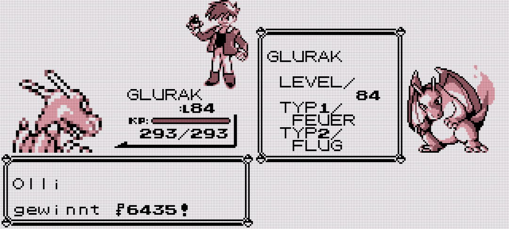

Over the holidays I went through my stuff™ and discovered unfinished Pokemon Sun/Moon (SM, will abbreviate generations (German) from here on) for Nintendo 3DS. I bought it back in 2016, finished like 2/3rd of the main story and and abandoned it. Now, I somehow felt the need to "finish it" (just beating Elite 4 + Champ and catching the four island "guardian" Fairy type Pokemon). Further exploring the post game didn't appeal to me. Maintaining affection using "Pokemon Refresh" felt like a chore.
By contrast, ORAS, I binged in 3 days from start to Elite 4 + Champ beaten. Wondering, whether I just "grew old and tired" of Pokemon or whether the games really got worse, I fired up Pokemon Red again:

No hand-holding, direct action, freedom to explore and a weirdly motivating grind. Despite non-existent postgame and the difficulty boiling down to "pick fire starter and press A", it was fun.
First of all, the games stand and fall with cute/strong/interesting and relatable Pocket Monsters, duh! If you can't pick favorites (motivated early with the starters in each generation), the games lose quite some pull.
In interviews, Game Freak confirmed the target audience to be:
(Of course, they want to cater to everyone and keep raking in billion$!)
...I'd condense to: battle, catch, grow, explore, connect and gimmicks. The first five are constants. Gimmicks vary by generation, offering some optional experiments that may not carry over to later installments (e.g. secret base building, Pokemon grooming contests).
Turn-based Pokemon battles are at the heart of all mainline games. This may be a bit dated by modern standards, but it makes the games very accessible. To this day, the fundamental mechanics have been established with the first three generations.
Gen1:
Gen2:
Gen3:
Later generations then continued with balancing, physical/special split, Fairy type, affection and further minor changes.
All features marked with "*", I'd consider not in the interest of the player. Meaning, the additional play time required to get optimal IV and natures is in no reasonable relation to the strategic benefit of getting a few more viable builds. So much, that competitive Pokemon play mostly happens on simulators, where you are free to build the desired Mon without any grind. Recent mainline games are acknowledging this by adding ingame means to fix IV and force natures.
Well, gotta mention it for completeness' sake: The MC child (you) and rival(s) head out to explore the Pokemon world, grow and beat bad guys/save world. Eventually, you'll beat the Pokemon League, Elite 4, champ, catch legendaries, explore the postgame and maybe complete the PokeDex.
On the pro side, backwards compatibility is pretty much unrivaled in the video game industry. Using paid Pokemon Bank/Home services (attachment has its price!), Gen3 Pokemon (from 2002/2003) can be transferred all the way up to current generation. Those services also support official emulations of Gen1 and Gen2.
However, recent games lacked quality and substance. I personally stopped "buying 'em all" in Gen5 when B2W2 (lame naming btw!) released before I was even done with BW. Gen7 and Gen8 have been lackluster.
Pokemon Legends: Arceus (PLA) is around the corner. Leaks confirm it as a modern (seamless fighting/catching in the world) but unpolished (empty, boring open areas, no interaction) take, a concept game. Considering BotW released in 2017, Pokemon games are still far from where they could be.
For me this means: wait, see and stay comfy in Johto: